BUSINESS GALLERY
Work. Detail. Possibility.
Explore the work, equipment and possibilities. Discuss what you have in mind with the team.
19 photographs
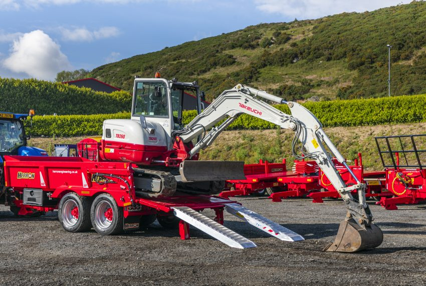
Dump Trailers
Side view of 12 ton Herron H2 Beavertail Low Loader and Dumper in one. ↗

Slurry Spreading
Tandem Axle Slurry Tanker with Trailing Shoe by Herron Engineering ↗
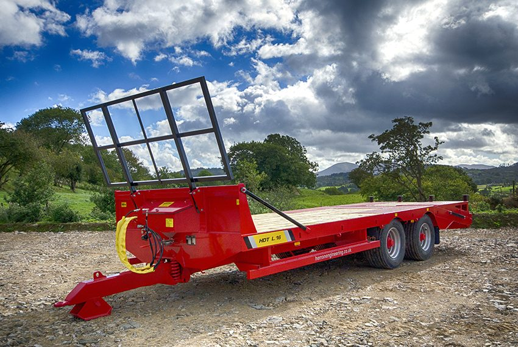
Lowloader Trailers
16 Tonne Tandem Axle Agri Low Loader Trailer by Herron Engineering ↗
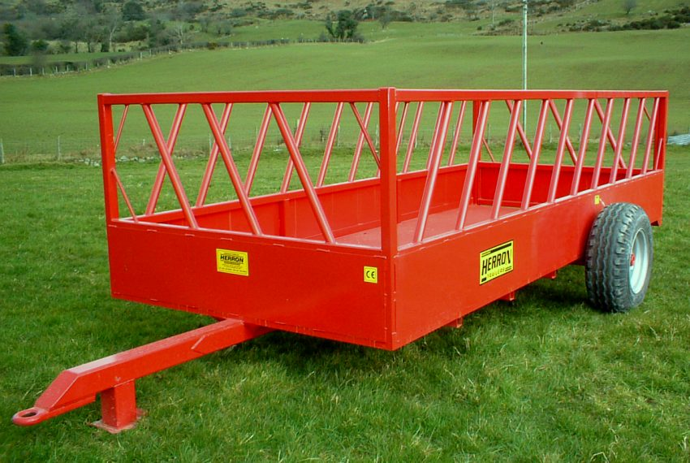
Feeding Trailers
Herron Engineering trailer ↗
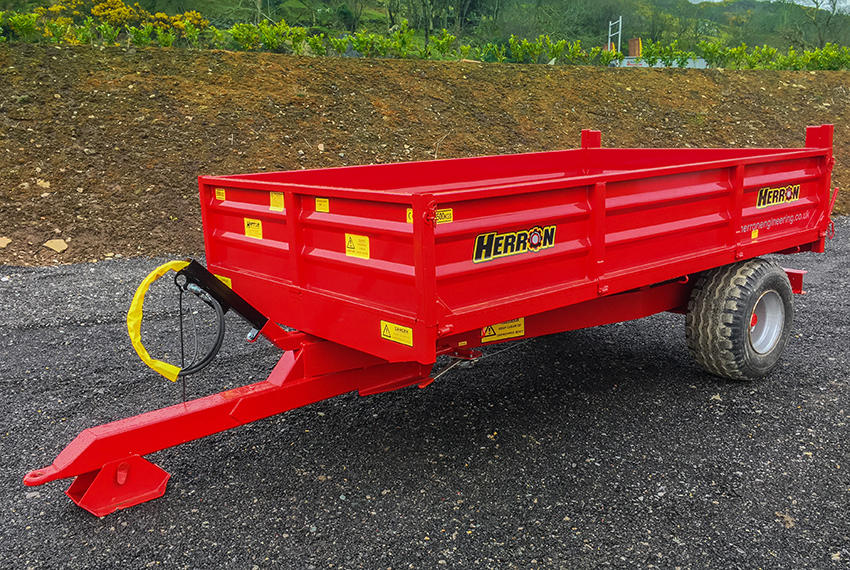
Drop Side Trailers
Dropside Tipping Trailer by Herron Engineering ↗
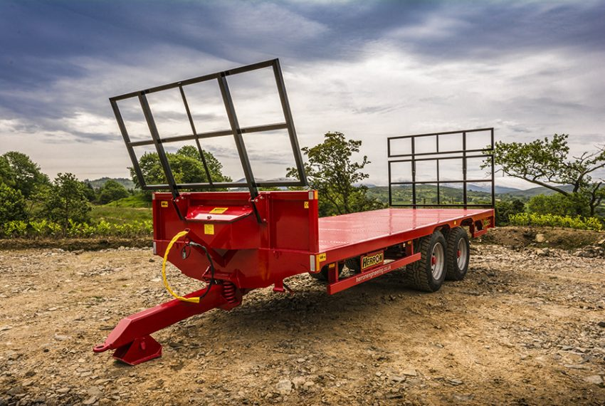
Equipment
Herron Agricultural Flatbed / Bale Trailer ↗
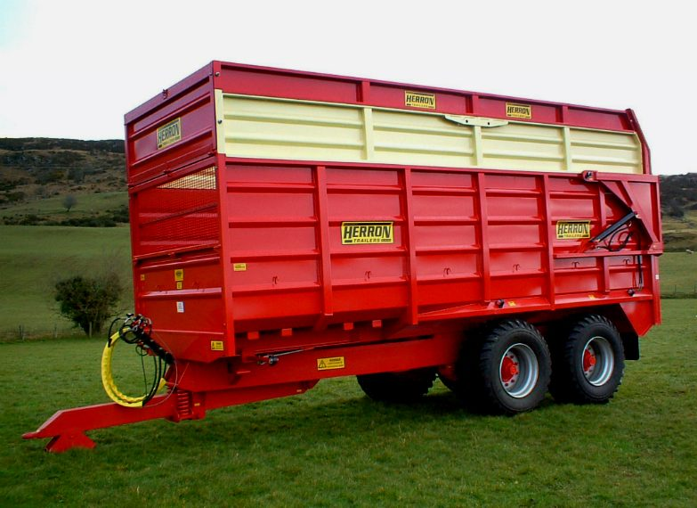
Equipment
Herron Engineering ↗
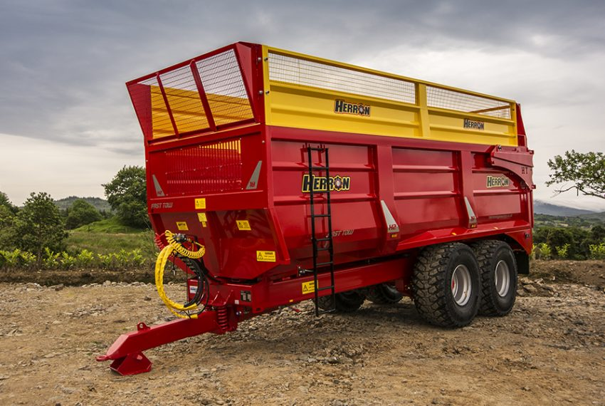
Silage Trailers
Herron Engineering H2 Grain and Silage Trailer ↗
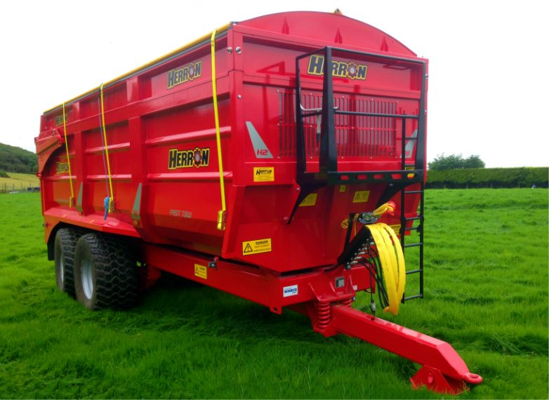
Grain Trailers Root Crop Trailer
Herron Engineering trailer ↗
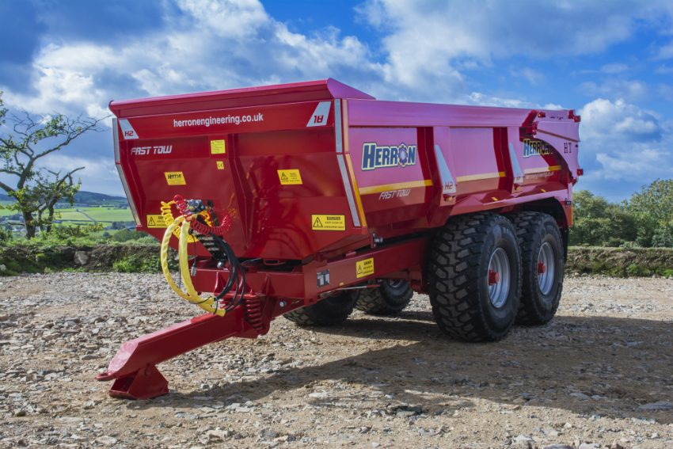
Equipment
HERRON_H2_DUMP_TRAILER ↗

Equipment
20 Tonne Industrial HDT Dump Trailer by Herron Engineering ↗

Equipment
20 Tonne HDT Industrial Dump Trailer by Herron Engineering ↗
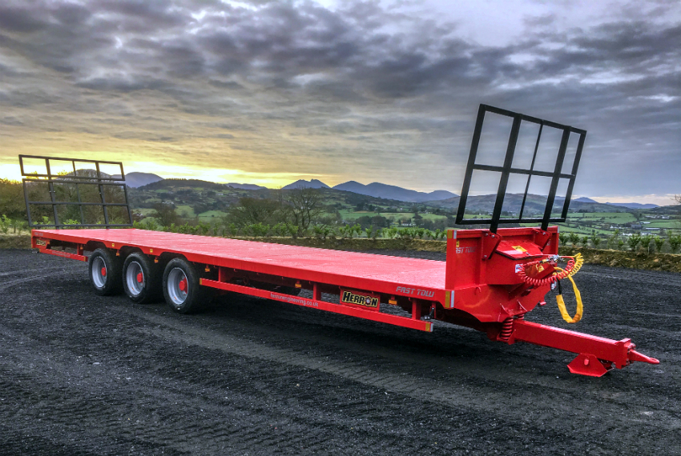
Flat Bed Trailers
Triaxle Industrial Flatbed Trailer by Herron Engineering ↗
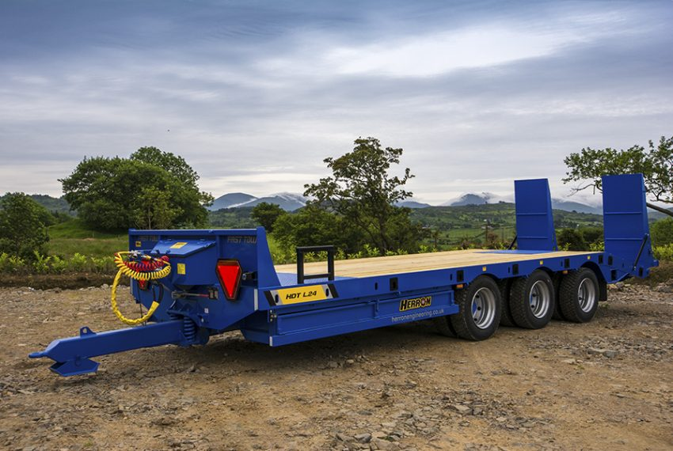
Equipment
Herron Engineering trailer ↗
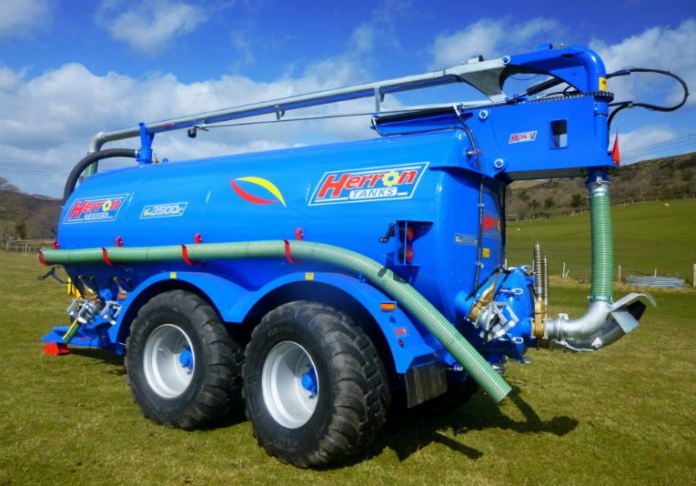
Equipment
HERRON SLURRY TANKER WITH BOOM ↗
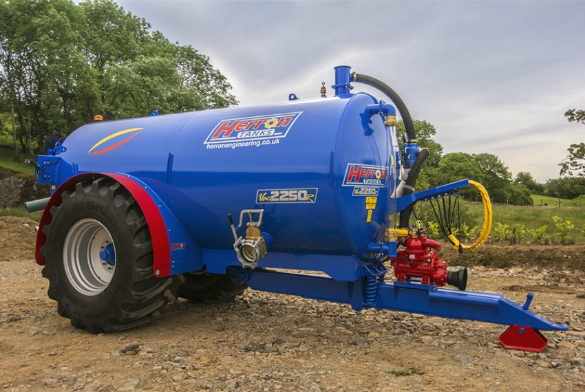
Slurry Tankers
2250 Gallon Single Axle Slurry Tanker Recessed by Herron Engineering ↗
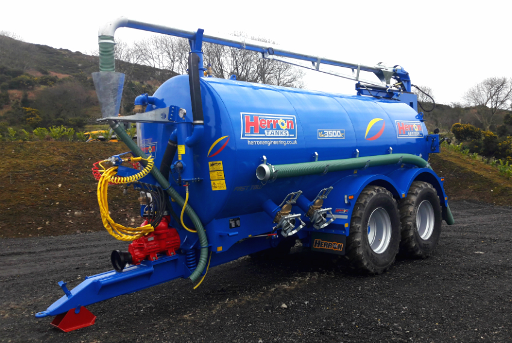
Equipment
3500 Gallon Slurry Tanker with Overhedge Boom by Herron Engineering ↗
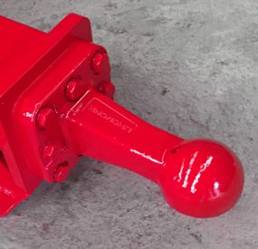
Trailer Options
K-80 Spoon Hitch for Herron Trailers and Slurry Tankers by Herron Engineering ↗
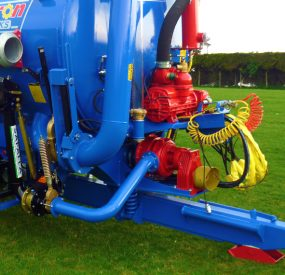
Tanker Options